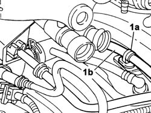
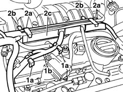
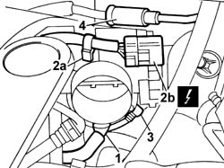
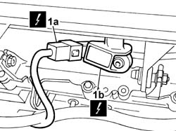
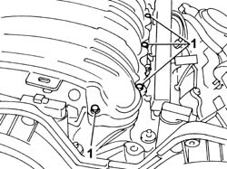
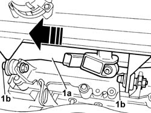
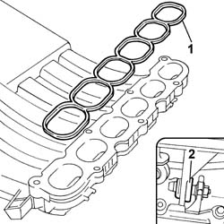
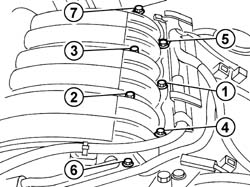

1072B50 SLEEVES CONNECTING AIR CAPACITY BOX TO INLET MANIFOLD IS - R+R
- Path
- Procedures > 10 ENGINE > 1072 INLET AND EXHAUST MANIFOLDS > 1072B INLET MANIFOLDS > 1072B50 SLEEVES CONNECTING AIR CAPACITY BOX TO INLET MANIFOLD IS - R+R
- Kind
- repair procedure (removal / refitting; the operation number is the code)
- Applies to
- engines: 3.0 24V V6; all production periods
- Interactive page
- https://sloeber94.github.io/elrnDB-fUlss/en/#/179007074
Applies to: engines: 3.0 24V V6; all production periods
 Removing
Removing
 Refitting
Refitting- Disconnect the negative battery terminal.
Description | Connector | |
|---|---|---|
. | Battery | A001B |
Op. 5010B18 CLIMATE CONTROL UNIT AIR INTAKE - R.R.
Op. 5050B34 WINDSCREEN WIPER ARM/S COMPLETE WITH BLADE - R+R
Op. 7210E22 WINDSCREEN BASE TRIM
See in Op. 1088B10
Op. 1016A42 LEFT HAND CYLINDER HEAD IGNITION COIL COVER - R+R
Op. 1048A47 SLEEVE FROM RIGID PIPE TO THROTTLE BODY - R R
See in Op. 1068A54
1. Release the band (1a) securing the fuel supply pipe (1b) from the air intake chamber

Applies to: engines: 3.0 24V V6; all production periods
1. Release the wiring (1b) from the securing clips (1a).
2. Lift the securing clips (2a), move the wiring and the fuel vapour recovery pipe, then release the mounting clips (2a) and remove the wiring retaining duct (2c).

Applies to: engines: 3.0 24V V6; all production periods
1. Disconnect the end of the engine oil vapour recovery pipe from the throttle casing.
2. Release the clips (2a), release the wiring and disconnect the electrical connection (2b) from the throttle valve actuator.
Description | Connector | |
|---|---|---|
2b | Integrated throttle casing actuator | N075 |
3. Disconnect the end of the fuel vapour recovery pipe from the intake chamber.
4. Disconnect the end of the vacuum intake pipe from the air intake chamber.

Applies to: engines: 3.0 24V V6; all production periods
1. Working at the back of the chamber, disconnect the electrical connection (1a) from the air pressure sensor (1b).
Description | Connector | |
|---|---|---|
1b | Air pressure sensor | K082 |

Applies to: engines: 3.0 24V V6; all production periods
1. Undo the (7) bolts fixing the air intake chamber.

Applies to: engines: 3.0 24V V6; all production periods
1. Move the air intake chamber (1a) sideways, towards the flywheel side, sliding it on the support bearings (1b) and remove it from the engine.

Applies to: engines: 3.0 24V V6; all production periods
- Protect the air intake manifold openings to prevent any dirt from entering.
Applies to: engines: 3.0 24V V6; all production periods
Refitting
Removing1. Check the condition of the gasket. Replace it, if necessary.
2. Check the condition of the flexible mountings. Replace them, if necessary.

Applies to: engines: 3.0 24V V6; all production periods
- Remove the protection from the intake manifold openings.
- Position the air intake chamber, complete with throttle casing, fitting it on the support bearings and tighten the fixing bolts.
- Pre-tighten the fixing bolts to the recommended torque, following the order illustrated in the diagram below.
 | Value - daNm | Fastening | Component | Ø |
|---|---|---|---|---|
. | 0.4 | Bolts | AIR CHAMBER - R.R. | - |
- Tighten the fixing bolts, following the order illustrated in the diagram below. Repeat the tightening cycle until the recommended torque is produced for all the bolts.
| Value - daNm | Fastening | Component | Ø |
|---|---|---|---|---|
. | 0.8 | Bolts | AIR CHAMBER - R.R. | - |

Applies to: engines: 3.0 24V V6; all production periods
- Connect the electrical connection to the air pressure sensor.
Description | Connector | |
|---|---|---|
. | Air pressure sensor | K082 |
- Connect the end of the vacuum intake pipe to the air intake chamber.
- Connect the end of the fuel vapour recovery pipe to the chamber.
- Connect the end of the engine oil vapour recovery pipe to the throttle casing.
- Connect the electrical connection to the throttle valve actuator and secure the wiring to the retaining clip.
Description | Connector | |
|---|---|---|
. | Integrated throttle casing actuator | N075 |
- Position the duct on the air chamber and secure it using the clips.
- Position the wiring and the fuel vapour recovery pipe in the duct and attach the retaining clips.
- Position the fuel supply pipe securing band on the air intake chamber.
See in Op. 1068A54
Op. 1048A47 SLEEVE FROM RIGID PIPE TO THROTTLE BODY - R R
Op. 1016A42 LEFT HAND CYLINDER HEAD IGNITION COIL COVER - R+R
See in Op. 1088B10
Op. 7210E22 WINDSCREEN BASE TRIM
Op. 5050B34 WINDSCREEN WIPER ARM/S COMPLETE WITH BLADE - R+R
Op. 5010B18 CLIMATE CONTROL UNIT AIR INTAKE - R.R.
- Connect the negative battery terminal.
Description | Connector | |
|---|---|---|
. | Battery | A001B |
Topics linked from this page (6)
- 0010T21 ENGINE COOLANT - CHECK DENSITY AND CHANGE, IF NECESSARY
- 1016A42 LEFT HAND CYLINDER HEAD IGNITION COIL COVER - R+R
- 1048A47 SLEEVE FROM RIGID PIPE TO THROTTLE BODY - R R
- 5010B18 CLIMATE CONTROL UNIT AIR INTAKE - R.R.
- 5050B34 WINDSCREEN WIPER ARM/S COMPLETE WITH BLADE - R+R
- 7210E22 WINDSCREEN BASE TRIM
Topics that link to this page (10)
- 1016A34 RIGHT-HAND CAM COVER - R + R AND REPLACE GASKET
- 1036C39 TIMING VARIATOR ON CYLINDER HEAD INTAKE CAMSHAFT - R R
- 1056B62 L/H AND R/H FUEL PIPE ASSEMBLY - WITH INJECTORS - R + R
- 1056B67 R/H FUEL MANIFOLD PIPE, WITH INJECTORS - R + R
- 1056B70 INJECTOR (ONE) - R + R WITH FUEL MANIFOLD PIPE REMOVED - INCLUDES SEAL REPLACEMNT
- 1056B90 SYSTEM CABLE BUNDLE - R + R
- 1072B10 INLET MANIFOLD - R + R AND REPLACE SEAL
- 5510C18 RIGHT HAND CYLINDER HEAD IGNITION COIL - R+R
- 5510C44 KNOCK SENSOR (ONE) - R+R
- 5510D10 SPARK PLUGS - R+R